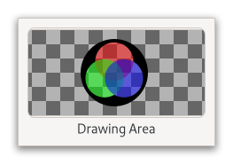

Gtk.DrawingArea¶
Example¶

- Subclasses:
None
Methods¶
- Inherited:
Gtk.Widget (183), GObject.Object (37), Gtk.Accessible (17), Gtk.Buildable (1)
- Structs:
class |
|
|
|
|
|
|
Virtual Methods¶
- Inherited:
Gtk.Widget (25), GObject.Object (7), Gtk.Accessible (6), Gtk.Buildable (9)
|
Properties¶
- Inherited:
Name |
Type |
Flags |
Short Description |
|---|---|---|---|
r/w/en |
|||
r/w/en |
Signals¶
- Inherited:
Name |
Short Description |
|---|---|
Emitted once when the widget is realized, and then each time the widget is changed while realized. |
Fields¶
- Inherited:
Name |
Type |
Access |
Description |
|---|---|---|---|
widget |
r |
Class Details¶
- class Gtk.DrawingArea(**kwargs)¶
- Bases:
- Abstract:
No
- Structure:
Allows drawing with cairo.
<picture> <source srcset=”drawingarea-dark.png” media=”(prefers-color-scheme: dark)”> <img alt=”An example
Gtk.DrawingArea" src=”drawingarea.png”> </picture>It’s essentially a blank widget; you can draw on it. After creating a drawing area, the application may want to connect to:
The [signal`Gtk`.Widget::realize] signal to take any necessary actions when the widget is instantiated on a particular display. (Create GDK resources in response to this signal.)
The [signal`Gtk`.DrawingArea::resize] signal to take any necessary actions when the widget changes size.
Call [method`Gtk`.DrawingArea.set_draw_func] to handle redrawing the contents of the widget.
The following code portion demonstrates using a drawing area to display a circle in the normal widget foreground color.
- Simple
Gtk.DrawingAreausage
```c static void draw_function (
Gtk.DrawingArea*area,cairo.Context*cr, int width, int height,objectdata) {Gdk.RGBAcolor;cairo.Context.arc(cr, width / 2.0, height / 2.0, MIN (width, height) / 2.0, 0, 2 *GLib.PI);Gtk.Widget.get_color(GTK_WIDGET (area), &color);Gdk.cairo_set_source_rgba(cr, &color);cairo.Context.fill(cr); }int main (int argc,
str**argv) {Gtk.init();Gtk.Widget*area =Gtk.DrawingArea.new();Gtk.DrawingArea.set_content_width(GTK_DRAWING_AREA (area), 100);Gtk.DrawingArea.set_content_height(GTK_DRAWING_AREA (area), 100);Gtk.DrawingArea.set_draw_func(GTK_DRAWING_AREA (area), draw_function,None,None); return 0; } ```The draw function is normally called when a drawing area first comes onscreen, or when it’s covered by another window and then uncovered. You can also force a redraw by adding to the “damage region” of the drawing area’s window using [method`Gtk`.Widget.queue_draw]. This will cause the drawing area to call the draw function again.
The available routines for drawing are documented in the Cairo documentation; GDK offers additional API to integrate with Cairo, like [func`Gdk`.:obj:cairo.Context.set_source_rgba] or [func`Gdk`.cairo_set_source_pixbuf].
To receive mouse events on a drawing area, you will need to use event controllers. To receive keyboard events, you will need to set the “can-focus” property on the drawing area, and you should probably draw some user-visible indication that the drawing area is focused.
If you need more complex control over your widget, you should consider creating your own
GtkWidgetsubclass.- get_content_height()[source]¶
- Returns:
The height requested for content of the drawing area
- Return type:
Retrieves the content height of the
GtkDrawingArea.
- get_content_width()[source]¶
- Returns:
The width requested for content of the drawing area
- Return type:
Retrieves the content width of the
GtkDrawingArea.
- set_content_height(height)[source]¶
- Parameters:
height (
int) – the height of contents
Sets the desired height of the contents of the drawing area.
Note that because widgets may be allocated larger sizes than they requested, it is possible that the actual height passed to your draw function is larger than the height set here. You can use [method`Gtk`.Widget.set_valign] to avoid that.
If the height is set to 0 (the default), the drawing area may disappear.
- set_content_width(width)[source]¶
- Parameters:
width (
int) – the width of contents
Sets the desired width of the contents of the drawing area.
Note that because widgets may be allocated larger sizes than they requested, it is possible that the actual width passed to your draw function is larger than the width set here. You can use [method`Gtk`.Widget.set_halign] to avoid that.
If the width is set to 0 (the default), the drawing area may disappear.
- set_draw_func(draw_func, *user_data)[source]¶
- Parameters:
draw_func (
Gtk.DrawingAreaDrawFuncorNone) – callback that lets you draw the drawing area’s contents
Setting a draw function is the main thing you want to do when using a drawing area.
The draw function is called whenever GTK needs to draw the contents of the drawing area to the screen.
The draw function will be called during the drawing stage of GTK. In the drawing stage it is not allowed to change properties of any GTK widgets or call any functions that would cause any properties to be changed. You should restrict yourself exclusively to drawing your contents in the draw function.
If what you are drawing does change, call [method`Gtk`.Widget.queue_draw] on the drawing area. This will cause a redraw and will call draw_func again.
Signal Details¶
- Gtk.DrawingArea.signals.resize(drawing_area, width, height)¶
- Signal Name:
resize- Flags:
- Parameters:
drawing_area (
Gtk.DrawingArea) – The object which received the signalwidth (
int) – the width of the viewportheight (
int) – the height of the viewport
Emitted once when the widget is realized, and then each time the widget is changed while realized.
This is useful in order to keep state up to date with the widget size, like for instance a backing surface.
Property Details¶
- Gtk.DrawingArea.props.content_height¶
- Name:
content-height- Type:
- Default Value:
0- Flags:
The content height.
- Gtk.DrawingArea.props.content_width¶
- Name:
content-width- Type:
- Default Value:
0- Flags:
The content width.